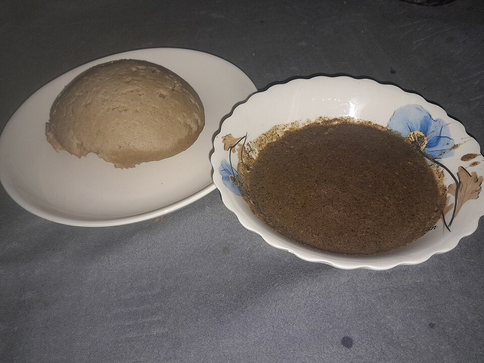
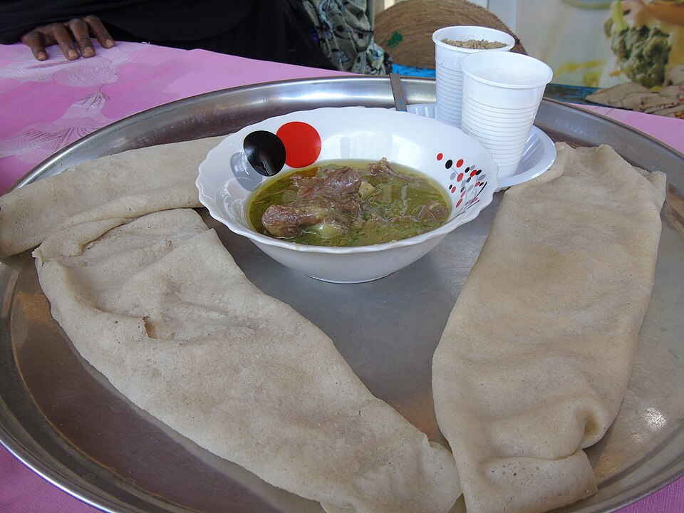
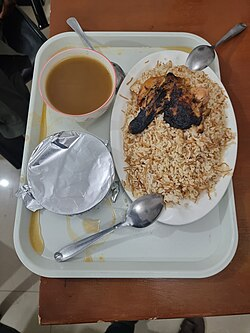
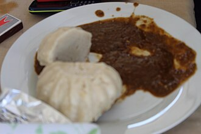

Boule with okra sauce
Abdeldjelil Souleyman · 2025
Original photograph and licenseTHE PEOPLE BEHIND THE PICTURES
Real photographs help us celebrate Chadian food and the wider world of cooking. The images below are editorial illustrations of dishes and businesses, not photographs of FA-MINNA partner menus.
The Chadian food photographs are shared under Creative Commons Attribution–ShareAlike 4.0. Downloaded previews may be resized; circular or rectangular crops are applied for display. No AI alteration was applied. Cropped or resized versions retain the same license. Original sources and photographers are linked below.

Abdeldjelil Souleyman · 2025
Original photograph and license
YACOUB DOUNGOUS · 2019
Original photograph and license
Abdeldjelil Souleyman · 2025
Original photograph and license
Fatakaya · 2019
Original photograph and license
Stefan de Vries · Pexels
Original photograph · Pexels licenseOther international food photographs were already included in this project. The FA-MINNA delivery-rider illustration is AI-generated.
1.jpg){kind=link}

.jpg){kind=link}